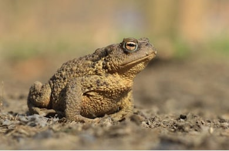
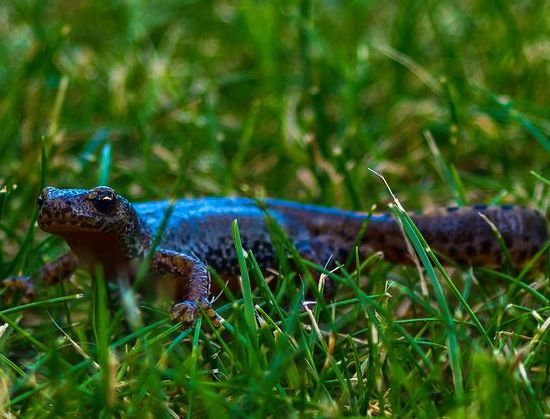
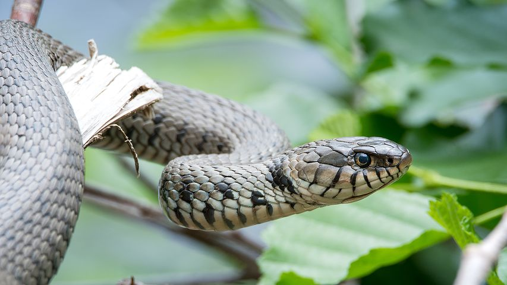
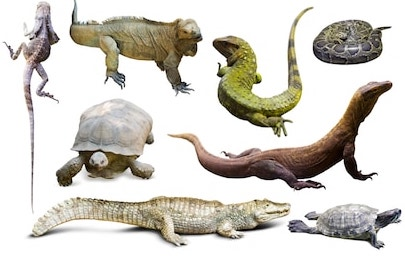
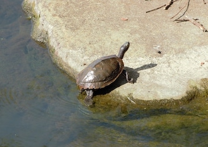
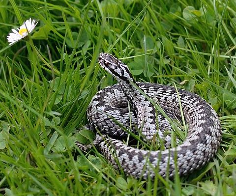

Reptile 1902 - 2014
Reptile Data, NBN Atlas
Reptile image source, playbay
Reptile description Wikipedia
ALL
Reptiles in the reptilia class, such as the turtles, crocodilians, snakes, amphisbaenians, lizards, tuatara, and including extinct non-avian dinosaurs.today,the study of reptiles is referred to as herpetology, which combine the modern amphibians and traditional reptile.Source
IMAGES

Amphibia
Amphibians are ectothermic and tetrapod vertebrates. They live in various of habitats such as terrestrial, fossorial, arboreal or freshwater aquatic ecosystems. Source
IMAGES
Anguis fragilis
Anguis fragilis that also called a deaf adder, a slowworm,a blindworm is a reptile live in Eurasia. In general, it has lizard's small eyes and it looks llike a blindsnake Source
IMAGES
Bofu bufo
The common toad and it called the toad in Europe area. It has found in most of Europe,the western part of North Asia, and has a small part of Northwest Africa.Source
IMAGES
Coronella austriaca
Coronella austriaca is one of the species of non-venomous snake. it is found in Europe and northern Iran Source
IMAGES

Epidalea calamita
Epidalea calamita belongs the toad and it is native to sandy and heathland areas of Europe. Comparing the common toads, It has a yellow lune in the middle of the back and have relatively short legs.Source
IMAGES

Ichthyosaura alpestris
：The alpine newt (Ichthyosaura alpestris) is introduced to UK and New Zealand. In general, it measure 7–12 cm (2.8–4.7 in) in total.Source
IMAGES
Lacerta agilis
The Lacerta agilis is legged lizard. It found In northwest Europe and Russian range. Source
IMAGES

Lissotriton
Lissotriton is a class of newts and live in Europe and parts of Asia Minor. they are aquatic reptile during breeding time and they but live in terrestrial habitats over the rest of the time.Source
IMAGES
Lissotriton vulgaris
The common newt (Lissotriton vulgaris) is a species of newt and it found in most area of Europe.Source
IMAGES
Natrix helvetica
Natrix Helvetica is a colubrid snake from Europe AND it general live in the area that close to water. Henetic analysis suggested that it could be treat as a separete species better than within the grass.Source
IMAGES

Pelophylax
Pelophylax is a class of true frogs and it widely found in Europe and Asia and a small part in northern Africa. Source
IMAGES

esculentus
The Pelophylax Esculentus that also called edible frog, common water frog or green frog is a common name for the grog in European frog.Source
IMAGES
Pelophylax ridibundus
The marsh frog (Pelophylax ridibundus) is the biggest frog live in Europe and belongs to the true frogs. It looks similar to edible frog and pool frog.Source
IMAGES

Rana temporaria
The common frog (Rana temporaria) that also called the European common frog, European common brown frog, or European grass frog is a semi-aquatic reptile.Source
IMAGES
Reptilia
Reptiles are tetrapod animals in the class Reptilia, comprising today's turtles, crocodilians, snakes, amphisbaenians, lizards, tuatara, and their extinct relatives including non-avian dinosaurs.Source
IMAGES
Salamandridae
Salamandridae is a class that consisting of true salamanders and newts. There are 74 species have been identified in Europe, Asia, the northern of Africa, and North America. skin of Salamandrids have the number of poison glands.Source
IMAGES
Trachemys scripta
Trachemys scripta belongs to a common semiaquatic turtle. It is popular in the pet trade recently and has been introduced to other area.Source
IMAGES
Triturus cristatus
Trachemys scripta belongs to a common semiaquatic turtle. It is popular in the pet trade recently and has been introduced to other area.Source
IMAGES
Vipera berus
Vipera berus is a venomous snakeand and it is widly found in most of Western Europeand and East Asia.Source
IMAGES
Zootoca vivipara
Zootoca vivipara is viviparous lizard and a Eurasian lizard. lives further north than many other non-marine reptiles.These reptiles also give birth to live young rather than other lizards that laying eggs. Source
IMAGES